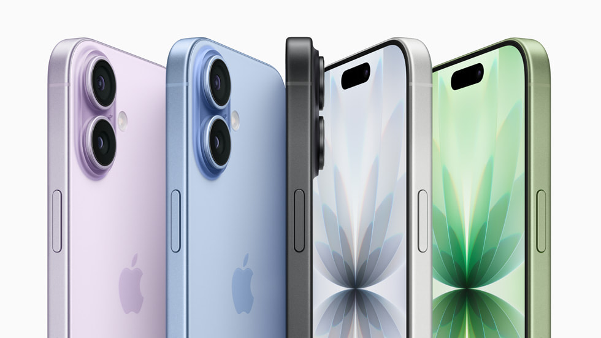

1113211020
我是數位系的佳恩，想要買ipone17

相機
iPhone 17 配備 4800 萬融合主相機，具備 2 倍光學品質望遠，還有 4800 萬像素融合超廣角相機，與 iPhone 16 的超廣角相機相比，解析度高達 4 倍。現在，超廣角照片解析度已預設為 2400 萬像素，這樣的檔案大小，無論是要以高畫質儲存或分享，都相當合適。隨便你抓特寫或拍遠距、在室內在室外、從明亮到低光場景，都能拍出超高解析度的照片，超美超驚豔。一出手就是 256GB，相比先前機型，起始儲存空間加倍6，讓你隨心所欲，想拍盡情拍。
螢幕
見識一下全新 iPhone 17。擁有弧形邊緣以及更纖細的邊框設計，以諸多耐用材質打造，如機身正面採用超瓷晶盾 2 面板，讓這款 iPhone 外觀絢麗，且經久耐看。6.3 吋超 Retina XDR 顯示器，讓你一覽更多精彩，完成更多想做的事5。具備自動適應更新頻率最高達 120Hz 的 ProMotion 技術，滑手機捲動畫面時更順暢，玩起遊戲來也更加投入。立刻出手，試看看。
前置鏡頭
全新方形感光元件，支援變焦和旋轉選項，為自拍和影片拍攝帶來更靈活的構圖方式。大家一起拍攝團體照時，還能自動調整取景，讓每個人都入鏡。
#
特色
性能
拍照
1
動態島
A19晶片
雙鏡頭4800萬畫素
2
相機控制按鈕
6core gpu
1800萬前置鏡頭
3
120Hz promotion
5core cpu
融合式相機